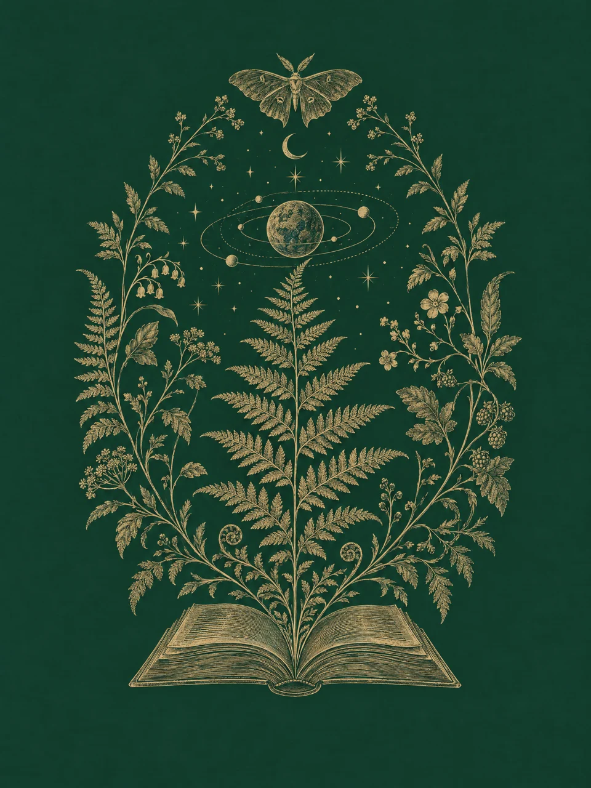

A minute for your curiosity
The world is still
full of wonder.
Step away from the endless scroll.
Open a small book of extraordinary ideas.
A different discovery each day. About a minute to read.
A companion for the curious
LittleWonder

One small discovery.Every day.
Follow your curiosity
Six doors. Countless possibilities.
The Thinking Room
A quiet place for the questions that change how we see ourselves.
10 discoveriesBetween the Lines
Books, their makers, and the stories hiding in the margins.
10 discoveriesThe Curious Past
Small windows into the extraordinary lives of other times.
10 discoveriesNature’s Secrets
The intricate, improbable wonders of our living world.
10 discoveriesBeyond the Obvious
Follow an ordinary idea until it becomes extraordinary.
10 discoveriesThe Unanswered
At the edge of what we know, there is room to wonder.
10 discoveries